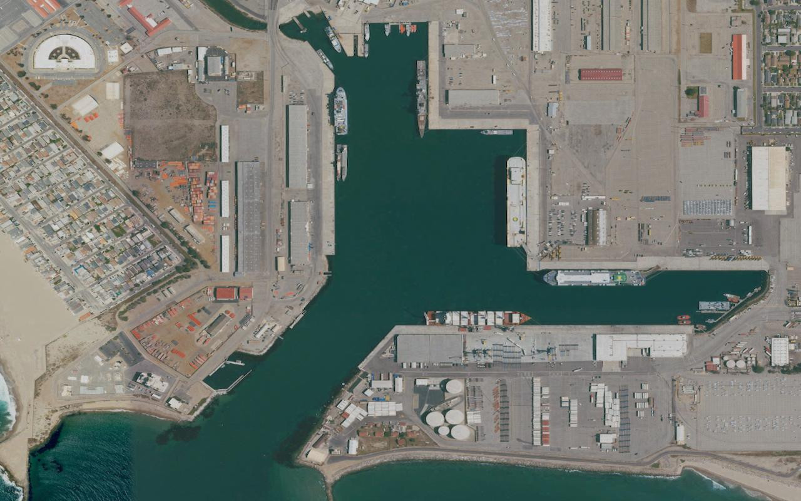

Detection result
Rotated polygons 保留在影像上，完整數值列於下方。
- Detections
- 0
- Top confidence
- —
- 本次 browser 執行
- —
- Mode
- 尚未 Detect
- Provenance
- USGS／USDA NAIP · 尚未執行

尚無 detection result。
Detection list
依 confidence 排序| class | conf | w(px) | h(px) | angle(°) |
|---|---|---|---|---|
| 尚未執行 Detect。 | ||||